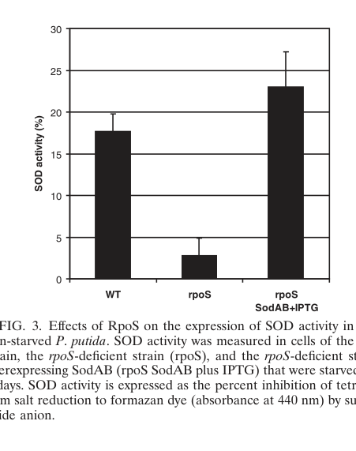

Fe-dependent cytoplasmic superoxide dismutase that disproportionates superoxide radicals to oxygen and hydrogen peroxide. SodB is a core intracellular ROS-defense enzyme in P. putida; KT2440 proteomics additionally suggest condition-dependent SodA/SodB heterodimer formation under iron limitation and increased SodB abundance during phenol-induced oxidative stress.
| GO Term | Evidence | Action | Reason |
|---|---|---|---|
|
GO:0004784
superoxide dismutase activity
|
IEA
GO_REF:0000120 |
ACCEPT |
Summary: This is the correct core molecular function. The reviewed UniProt entry identifies Q88PD5 as an Fe-containing superoxide dismutase (EC 1.15.1.1), and species-level non-KT2440 mutational work in P. putida supports FeSOD as a conserved major determinant of superoxide tolerance.
Reason: The term exactly captures the catalytic activity of SodB and is the most informative existing molecular function annotation.
Supporting Evidence:
file:PSEPK/sodB/sodB-uniprot.txt
DR GO; GO:0004784; F:superoxide dismutase activity; IEA:UniProtKB-EC.
PMID:10742227
Our results indicate that FeSOD in P. putida is more important than MnSOD in aerobic metabolism and oxidative stress.
file:PSEPK/sodB/sodB-deep-research-falcon.md
annotated as an **iron-type superoxide dismutase (Fe-SOD)**
file:PSEPK/sodB/sodB-notes.md
This is not KT2440-specific, but it supports conserved FeSOD importance across P. putida orthologs.
|
|
GO:0005737
cytoplasm
|
IEA
GO_REF:0000117 |
ACCEPT |
Summary: Cytoplasmic localization is appropriate for a soluble bacterial FeSOD that detoxifies intracellular superoxide. SodB lacks export features in the reviewed UniProt record, and all functional evidence places its activity inside the cell. The falcon deep research could not retrieve an explicit experimental subcellular-localization statement for KT2440 SodB, so this annotation rests on the UniProt sequence-based inference plus the general intracellular ROS-defense role rather than direct localization data.
Reason: This is the expected and biologically coherent cellular component for SodB. SodB destroys superoxide produced within the cell, consistent with a cytoplasmic site of action.
Supporting Evidence:
file:PSEPK/sodB/sodB-uniprot.txt
DR GO; GO:0005737; C:cytoplasm; IEA:UniProtKB-ARBA.
file:PSEPK/sodB/sodB-uniprot.txt
CC -!- FUNCTION: Destroys superoxide anion radicals which are normally
|
|
GO:0006801
superoxide metabolic process
|
IEA
GO_REF:0000002 |
MODIFY |
Summary: The annotation is directionally correct but too broad. SodB does not participate in superoxide chemistry generically; it specifically removes superoxide radicals by disproportionation.
Reason: The child term `removal of superoxide radicals` better captures the process directly carried out by superoxide dismutase.
Proposed replacements:
removal of superoxide radicals
Supporting Evidence:
file:PSEPK/sodB/sodB-uniprot.txt
CC Reaction=2 superoxide + 2 H(+) = H2O2 + O2; Xref=Rhea:RHEA:20696,
file:PSEPK/sodB/sodB-deep-research-falcon.md
catalyzing the **dismutation of superoxide radical
|
|
GO:0019430
removal of superoxide radicals
|
IEA
GO_REF:0000108 |
ACCEPT |
Summary: This is the right biological process annotation for SodB. The enzyme's direct role is to eliminate superoxide radicals, which is more specific than the broader parent process.
Reason: The term is tightly matched to the catalytic chemistry of superoxide dismutase.
Supporting Evidence:
file:PSEPK/sodB/sodB-uniprot.txt
CC -!- FUNCTION: Destroys superoxide anion radicals which are normally
PMID:10742227
The sodB and sodA sodB mutants were more sensitive than wild type to oxidative stress generated within the cell by paraquat treatment.
file:PSEPK/sodB/sodB-deep-research-falcon.md
detoxified by **SODs (SodA/SodB)** → **H2O2**
|
|
GO:0046872
metal ion binding
|
IEA
GO_REF:0000002 |
MODIFY |
Summary: SodB is indeed a metal-binding enzyme, but this term is too general for a reviewed FeSOD with an explicitly assigned iron cofactor and mapped binding residues.
Reason: `iron ion binding` is the correct specific cofactor-binding term for this protein.
Proposed replacements:
iron ion binding
Supporting Evidence:
file:PSEPK/sodB/sodB-uniprot.txt
CC Note=Binds 1 Fe cation per subunit. {ECO:0000250};
file:PSEPK/sodB/sodB-deep-research-falcon.md
KT2440 SodB is annotated as an **Fe-SOD**
|
|
GO:0046914
transition metal ion binding
|
IEA
GO_REF:0000117 |
MODIFY |
Summary: This term is also true but underspecific. The reviewed record identifies the bound transition metal as iron rather than leaving the cofactor generic.
Reason: `iron ion binding` is the more informative and biologically accurate child term.
Proposed replacements:
iron ion binding
Supporting Evidence:
file:PSEPK/sodB/sodB-uniprot.txt
CC Note=Binds 1 Fe cation per subunit. {ECO:0000250};
file:PSEPK/sodB/sodB-deep-research-falcon.md
SODs are categorized by the metal cofactor used in catalysis (Cu/Zn-, Fe-, Mn-, Ni-SOD)
|
Q: Under which environmental conditions does KT2440 assemble the reported SodA/SodB heterodimer instead of predominantly using a canonical SodB homodimer?
Suggested experts: S. Heim, M. Ferrer, K. N. Timmis
Q: How much of KT2440 solvent and rhizosphere fitness depends specifically on SodB versus the broader oxidative-stress network?
Suggested experts: Y. C. Kim, A. J. Anderson, Pedro M. Santos
Experiment: Compare iron-replete and iron-limited cultures by native PAGE, targeted proteomics, and metal analysis to quantify SodB homodimer versus SodA/SodB heterodimer abundance.
Hypothesis: Iron limitation remodels the Sod isozyme composition of KT2440.
Type: proteomics
Experiment: Measure growth, aconitase or 6-phosphogluconate dehydratase activity, and ROS survival in wild type, sodB knockout, sodA knockout, and complemented strains after paraquat or phenol exposure.
Hypothesis: SodB specifically protects superoxide-sensitive central metabolic enzymes during oxidative challenge.
Type: genetics and physiology
The research report should be a detailed narrative explaining the function, biological processes, and localization of the gene product. Citations should be given for all claims.
You should prioritize authoritative reviews and primary scientific literature when conducting research. You can supplement
this with annotations you find in gene/protein databases, but these can be outdated or inaccurate.
We are specifically interested in the primary function of the gene - for enzymes, what reaction is catalyzed, and what is the substrate specificity? For transporters, what is the substrate? For structural proteins or adapters, what is the broader structural role? For signaling molecules, what is the role in the pathway.
We are interested in where in or outside the cell the gene product carries out its function.
We are also interested in the signaling or biochemical pathways in which the gene functions. We are less interested in broad pleiotropic effects, except where these elucidate the precise role.
Include evidence where possible. We are interested in both experimental evidence as well as inference from structure, evolution, or bioinformatic analysis. Precise studies should be prioritized over high-throughput, where available.
The gene symbol sodB is widely used across bacteria, but in Pseudomonas putida KT2440 it is explicitly mapped to the ordered locus name PP_0915 and annotated as an iron-type superoxide dismutase (Fe-SOD), while sodA maps to PP_0946 (Mn-SOD). (kim2014oxidativestressresponse pages 1-2, tarassova2009elevatedmutationfrequency pages 5-7)
This matches the user-provided UniProt entry Q88PD5 (gene sodB, PP_0915; Mn/Fe_SOD family domains) and therefore the report below pertains to the correct protein/gene context. (kim2014oxidativestressresponse pages 1-2)
Superoxide dismutases (SODs) are metalloenzymes that detoxify reactive oxygen species (ROS) by catalyzing the dismutation of superoxide radical (O2•−) to O2 and H2O2. In bacteria, H2O2 is then removed mainly by catalases/peroxidases. (kim2014oxidativestressresponse pages 1-2)
SODs are categorized by the metal cofactor used in catalysis (Cu/Zn-, Fe-, Mn-, Ni-SOD). Most P. putida strains encode both Mn-SOD and Fe-SOD, where Fe-SOD is commonly encoded by sodB (or sodF). (kim2014oxidativestressresponse pages 1-2)
In P. putida KT2440:
- sodB = PP_0915 (Fe-SOD) (kim2014oxidativestressresponse pages 1-2)
- sodA = PP_0946 (Mn-SOD) (kim2014oxidativestressresponse pages 1-2)
- A SodA–SodB heterodimer has been reported in KT2440 cells (reviewed). (kim2014oxidativestressresponse pages 1-2)
Reaction catalyzed: dismutation of superoxide (O2•−) into oxygen (O2) and hydrogen peroxide (H2O2). (kim2014oxidativestressresponse pages 1-2)
Substrate specificity: the physiological substrate is superoxide; the retrieved KT2440-focused texts do not provide SodB kinetic constants or alternative substrates. (kim2014oxidativestressresponse pages 1-2)
Cofactor usage: KT2440 SodB is annotated as an Fe-SOD, while SodA is Mn-SOD; iron and manganese availability influence SOD expression in P. putida. (kim2014oxidativestressresponse pages 1-2)
The P. putida oxidative-stress detoxification cascade described in authoritative KT2440-focused review is:
1) Superoxide (O2•−) generated during aerobic metabolism and stress
2) detoxified by SODs (SodA/SodB) → H2O2
3) H2O2 removed by catalases/peroxidases (e.g., KatA/KatB/Ahp systems). (kim2014oxidativestressresponse pages 1-2)
Metal availability & growth phase: Expression of sodA and sodB is reported to be differentially regulated by growth phase and by iron and manganese availability; these metals are essential cofactors and are important in regulation of sod transcription. (kim2014oxidativestressresponse pages 1-2, kim2014oxidativestressresponse pages 2-4)
RpoS (stationary phase / starvation): In carbon-starved stationary-phase cells, an rpoS-deficient P. putida strain shows an approximately fivefold lower SOD activity than WT; the authors conclude SOD expression is under positive control of RpoS, and explicitly state RpoS is important for regulating sodA and sodB. (tarassova2009elevatedmutationfrequency pages 5-7)
OxyR (peroxide response): Catalase genes (KatA/KatB) are stated to be under control of OxyR in P. putida; this places SodB upstream of peroxide detoxification, but the retrieved excerpts do not provide direct OxyR→sodB regulation evidence. (tarassova2009elevatedmutationfrequency pages 5-7)
SoxR paradigm differs from enterics: P. putida oxidative-stress regulation differs from the classic E. coli SoxR/SoxS model. A transcriptomics study reports SoxR is not responsive to oxidative stress in P. putida and that typical SoxR-regulon genes in enterics (including sodA) are SoxR-independent in P. putida. (bojanovic2017globaltranscriptionalresponses pages 10-11)
The retrieved KT2440-focused sources did not explicitly state SodB subcellular localization (cytosol vs periplasm) or provide signal peptide evidence. Therefore, this report cannot cite experimental localization for SodB from the retrieved full text. (kim2014oxidativestressresponse pages 4-5, kim2014oxidativestressresponse pages 5-6)
Under sudden exposure to phenol, quantitative proteomics reported SodB (Fe) upregulation with induction folds of:
- 1.5× at 600 mg/L phenol
- 1.7× at 800 mg/L phenol
This supports a role in chemical-stress-associated ROS management during exposure to toxic aromatics. (santos2004insightsintopseudomonas pages 6-7)
Tarassova et al. (2009) provide quantitative evidence connecting SOD capacity (from sodA/sodB) to survival and mutation accumulation in starving P. putida:
- ~5-fold decline in SOD activity in an rpoS-deficient strain vs WT after 8 days starvation (tarassova2009elevatedmutationfrequency pages 5-7)
- Overexpression of a chromosomal Ptac-sodA-sodB cassette restored SOD activity to WT-like levels (tarassova2009elevatedmutationfrequency pages 5-7)
- SodAB overexpression increased survival of starving rpoS-deficient cells by ~10-fold and reduced accumulation of base-substitution revertants by ~2.5-fold (tarassova2009elevatedmutationfrequency pages 5-7)
Figure-based visual evidence for these quantitative effects is available from the same paper (Fig. 3 and Fig. 4). (tarassova2009elevatedmutationfrequency media 8659f34f, tarassova2009elevatedmutationfrequency media 8e16e747)
In a global transcriptional study, sodA and sodB were not differentially expressed after addition of H2O2 in KT2440, consistent with the concept that SODs detoxify superoxide rather than peroxide and that peroxide detoxification is handled largely by catalases/peroxidases. (bojanovic2017globaltranscriptionalresponses pages 10-11)
A 2024 study engineered KT2440 for improved salt tolerance and demonstrated pollutant degradation under high salinity:
- WT KT2440 tolerated 4% w/v NaCl in minimal salts medium.
- Engineering (co-expression of EcnhaA Na+/H+ antiporter + betB) raised tolerance to 5% w/v NaCl, and with compatible solute supplementation to 6% w/v NaCl.
- Under 4% NaCl, engineered KT2440 degraded 56.70% benzoic acid and 95.64% protocatechuic acid in 48 h, whereas WT showed no biodegradation under those conditions.
These data are not SodB-specific, but they reinforce the importance of stress-defense networks (including redox/ROS management) for real-world deployment of P. putida chassis strains in harsh environments. (fan2024improvementinsalt pages 1-2, fan2024improvementinsalt pages 10-12)
A 2024 FEMS Microbiology Reviews paper emphasizes that many genomes labeled “P. putida” in databases actually fall into distinct cliques/species within the P. putida group, highlighting the need for caution when transferring annotations across strains/species. This is directly relevant to sodB annotation practice because SodB homologs are widespread and functional assumptions should track strain/species identity carefully. (udaondo2024unravelingthegenomic pages 9-12)
In a 2024 Communications Biology multi-omics co-culture study, the authors discuss superoxide dismutase within the glutathione-independent oxidative stress handling toolkit (catalases/peroxidases/SODs). While the sodB quantitative example shown is for the cyanobacterial partner (SodB log2-FC 1.5 in S. elongatus), the paper also frames P. putida as a stress-tolerant co-culture partner and discusses ROS as a major stress factor for heterotrophs near photosynthetic organisms. This supports the broader expert view that robust antioxidant systems are part of why pseudomonads perform well in mixed communities and biotechnology. (kratzl2024pseudomonasputidaas pages 11-12, kratzl2024pseudomonasputidaas pages 10-11)
Across the retrieved KT2440-focused literature, SodB is consistently positioned as part of the primary defense against superoxide generated during aerobic metabolism and environmental challenges, including pollutant exposure. (kim2014oxidativestressresponse pages 1-2, santos2004insightsintopseudomonas pages 6-7)
A key expert takeaway is that P. putida oxidative-stress regulation is not isomorphic to E. coli: paraquat/oxidant responses and the SoxR regulatory logic differ, which affects how one should interpret expression data or design biosensors/engineering strategies around superoxide stress and SOD genes. (bojanovic2017globaltranscriptionalresponses pages 10-11, kim2014oxidativestressresponse pages 1-2)
The starvation study provides a clear mechanistic link from stationary-phase regulation (RpoS) → SOD capacity → survival and reduced mutation accumulation, implicating SodA/SodB capacity as a contributor to both stress tolerance and maintenance of genome integrity under prolonged nutrient limitation. (tarassova2009elevatedmutationfrequency pages 5-7)
The following table compiles the strongest retrieved evidence for KT2440 SodB identity, function, regulation, and quantitative phenotypes/applications.
| Claim/Topic | Key details (include quantitative numbers) | Evidence source (paper + year) | URL/DOI | Notes/limitations |
|---|---|---|---|---|
| Gene identity and matched locus tags | In Pseudomonas putida KT2440, sodB = PP_0915 and sodA = PP_0946; sodB is the iron-containing superoxide dismutase (Fe-SOD) in this strain, matching the UniProt target Q88PD5 rather than unrelated sodB genes from other organisms. (kim2014oxidativestressresponse pages 1-2, tarassova2009elevatedmutationfrequency pages 5-7) | Kim & Park 2014; Tarassova et al. 2009 | https://doi.org/10.1007/s00253-014-5883-4; https://doi.org/10.1128/JB.01803-08 | Identity is well supported at the strain/locus level; UniProt accession itself was provided by the user, not extracted from these papers. |
| Core enzymatic reaction and cofactor class | SODs catalyze dismutation of superoxide (O2•−) to O2 and H2O2; P. putida SODs are classified by metal cofactor, with Fe-SOD (sodB/sodF) and Mn-SOD (sodA/sodM) present in most strains. (kim2014oxidativestressresponse pages 1-2) | Kim & Park 2014 | https://doi.org/10.1007/s00253-014-5883-4 | Review-level evidence; no KT2440-specific kinetic constants for SodB were recovered in the available contexts. |
| SodA–SodB heterodimer | KT2440 reportedly produces a SodA–SodB heterodimer, indicating interaction between Mn-SOD and Fe-SOD isoforms in vivo. (kim2014oxidativestressresponse pages 1-2) | Kim & Park 2014 | https://doi.org/10.1007/s00253-014-5883-4 | Statement is cited in the review from earlier primary literature; the original heterodimer paper was not directly available in the retrieved full text. |
| Regulation by growth phase and metals | Expression of sodA and sodB is reported to be differentially regulated by growth phase, iron, and manganese; Fe and Mn are described as essential SOD cofactors that influence transcription/activity. (kim2014oxidativestressresponse pages 1-2, kim2014oxidativestressresponse pages 2-4) | Kim & Park 2014 | https://doi.org/10.1007/s00253-014-5883-4 | Available excerpts do not provide numerical fold-changes for Fe/Mn regulation or direct Fur-binding data for KT2440 sodB. |
| Paraquat regulation differs from E. coli paradigm | In P. putida, paraquat does not induce sod transcription or increase SOD activity, unlike the classic E. coli SoxR/SoxS paradigm. Yet loss of antioxidant SOD capacity matters physiologically. (kim2014oxidativestressresponse pages 2-4, bojanovic2017globaltranscriptionalresponses pages 10-11) | Kim & Park 2014; Bojanovič et al. 2017 | https://doi.org/10.1007/s00253-014-5883-4; https://doi.org/10.1128/AEM.03236-16 | Evidence supports non-induction by paraquat/H2O2 in KT2440, but direct sodB-only mutant data were not recovered here. |
| Functional phenotype of sodA/sodB loss | Although paraquat does not induce sod genes, deletion of both sodA and sodB increases paraquat sensitivity and causes impaired growth on roots/root colonization, attributed to oxidative inactivation of sensitive metabolic enzymes. (kim2014oxidativestressresponse pages 2-4) | Kim & Park 2014 | https://doi.org/10.1007/s00253-014-5883-4 | Phenotype is for the double mutant, so the relative contribution of SodB alone versus SodA is not resolved in the available excerpts. |
| Phenol-stress proteomic induction | Under sudden phenol exposure, KT2440 SodB (Fe) was upregulated in proteomics with 1.5-fold induction at 600 mg/L phenol and 1.7-fold at 800 mg/L phenol. (santos2004insightsintopseudomonas pages 6-7) | Santos et al. 2004 | https://doi.org/10.1002/pmic.200300793 | Protein-level evidence under a defined chemical stress; does not prove direct transcriptional regulation or isolate SodB-specific necessity. |
| RpoS-dependent antioxidant control | In carbon-starved stationary-phase cells, an rpoS-deficient strain showed ~5-fold lower SOD activity than WT, indicating positive control of sodA/sodB expression by RpoS under starvation/stationary-phase stress. (tarassova2009elevatedmutationfrequency pages 5-7) | Tarassova et al. 2009 | https://doi.org/10.1128/JB.01803-08 | Activity assay measured total SOD activity, not SodB alone; effect likely reflects combined SodA/SodB regulation. |
| SodAB overexpression rescues oxidative-stress phenotypes | Chromosomal Ptac-sodAsodB overexpression restored SOD activity in the rpoS mutant to near WT levels, increased survival about 10-fold during long-term starvation, and reduced accumulation of Phe+ revertants ~2.5-fold. (tarassova2009elevatedmutationfrequency pages 5-7, tarassova2009elevatedmutationfrequency media 8659f34f) | Tarassova et al. 2009 | https://doi.org/10.1128/JB.01803-08 | Rescue used combined sodA+sodB overexpression, so it supports antioxidant function but not a SodB-only quantitative attribution. |
| Oxidative-stress pathway context | SodB is part of the cytoprotective ROS-detoxification layer where SOD converts superoxide to H2O2, which is then removed by catalase/peroxiredoxin systems; KT2440 oxidative-stress regulation involves OxyR, SoxR, FinR, and HexR, but direct sodB targeting is not firmly established in the available excerpts. (kim2014oxidativestressresponse pages 1-2, bojanovic2017globaltranscriptionalresponses pages 10-11) | Kim & Park 2014; Bojanovič et al. 2017 | https://doi.org/10.1007/s00253-014-5883-4; https://doi.org/10.1128/AEM.03236-16 | Strong pathway context, but direct regulator–promoter evidence for sodB specifically is limited in the retrieved material. |
Table: This table compiles the strongest retrieved evidence for the identity, biochemical function, regulation, and stress-related phenotypes of Pseudomonas putida KT2440 SodB (PP_0915). It highlights quantitative findings and flags where current evidence is indirect, review-based, or reflects combined SodA/SodB effects rather than SodB alone.
References
(kim2014oxidativestressresponse pages 1-2): Jisun Kim and Woojun Park. Oxidative stress response in pseudomonas putida. Applied Microbiology and Biotechnology, 98:6933-6946, Jun 2014. URL: https://doi.org/10.1007/s00253-014-5883-4, doi:10.1007/s00253-014-5883-4. This article has 144 citations and is from a domain leading peer-reviewed journal.
(tarassova2009elevatedmutationfrequency pages 5-7): Kairi Tarassova, Radi Tegova, Andres Tover, Riho Teras, Mariliis Tark, Signe Saumaa, and Maia Kivisaar. Elevated mutation frequency in surviving populations of carbon-starved rpos -deficient pseudomonas putida is caused by reduced expression of superoxide dismutase and catalase. Jun 2009. URL: https://doi.org/10.1128/jb.01803-08, doi:10.1128/jb.01803-08. This article has 23 citations and is from a peer-reviewed journal.
(kim2014oxidativestressresponse pages 2-4): Jisun Kim and Woojun Park. Oxidative stress response in pseudomonas putida. Applied Microbiology and Biotechnology, 98:6933-6946, Jun 2014. URL: https://doi.org/10.1007/s00253-014-5883-4, doi:10.1007/s00253-014-5883-4. This article has 144 citations and is from a domain leading peer-reviewed journal.
(bojanovic2017globaltranscriptionalresponses pages 10-11): Klara Bojanovič, Isotta D'Arrigo, and Katherine S. Long. Global transcriptional responses to osmotic, oxidative, and imipenem stress conditions in pseudomonas putida. Applied and Environmental Microbiology, Apr 2017. URL: https://doi.org/10.1128/aem.03236-16, doi:10.1128/aem.03236-16. This article has 83 citations and is from a peer-reviewed journal.
(kim2014oxidativestressresponse pages 4-5): Jisun Kim and Woojun Park. Oxidative stress response in pseudomonas putida. Applied Microbiology and Biotechnology, 98:6933-6946, Jun 2014. URL: https://doi.org/10.1007/s00253-014-5883-4, doi:10.1007/s00253-014-5883-4. This article has 144 citations and is from a domain leading peer-reviewed journal.
(kim2014oxidativestressresponse pages 5-6): Jisun Kim and Woojun Park. Oxidative stress response in pseudomonas putida. Applied Microbiology and Biotechnology, 98:6933-6946, Jun 2014. URL: https://doi.org/10.1007/s00253-014-5883-4, doi:10.1007/s00253-014-5883-4. This article has 144 citations and is from a domain leading peer-reviewed journal.
(santos2004insightsintopseudomonas pages 6-7): Pedro M. Santos, Dirk Benndorf, and Isabel Sá‐Correia. Insights into pseudomonas putida kt2440 response to phenol‐induced stress by quantitative proteomics. PROTEOMICS, 4:2640-2652, Sep 2004. URL: https://doi.org/10.1002/pmic.200300793, doi:10.1002/pmic.200300793. This article has 282 citations and is from a peer-reviewed journal.
(tarassova2009elevatedmutationfrequency media 8659f34f): Kairi Tarassova, Radi Tegova, Andres Tover, Riho Teras, Mariliis Tark, Signe Saumaa, and Maia Kivisaar. Elevated mutation frequency in surviving populations of carbon-starved rpos -deficient pseudomonas putida is caused by reduced expression of superoxide dismutase and catalase. Jun 2009. URL: https://doi.org/10.1128/jb.01803-08, doi:10.1128/jb.01803-08. This article has 23 citations and is from a peer-reviewed journal.
(tarassova2009elevatedmutationfrequency media 8e16e747): Kairi Tarassova, Radi Tegova, Andres Tover, Riho Teras, Mariliis Tark, Signe Saumaa, and Maia Kivisaar. Elevated mutation frequency in surviving populations of carbon-starved rpos -deficient pseudomonas putida is caused by reduced expression of superoxide dismutase and catalase. Jun 2009. URL: https://doi.org/10.1128/jb.01803-08, doi:10.1128/jb.01803-08. This article has 23 citations and is from a peer-reviewed journal.
(fan2024improvementinsalt pages 1-2): Min Fan, Shuyu Tan, Wei Wang, and Xuehong Zhang. Improvement in salt tolerance ability of pseudomonas putida kt2440. Biology, 13:404, Jun 2024. URL: https://doi.org/10.3390/biology13060404, doi:10.3390/biology13060404. This article has 25 citations.
(fan2024improvementinsalt pages 10-12): Min Fan, Shuyu Tan, Wei Wang, and Xuehong Zhang. Improvement in salt tolerance ability of pseudomonas putida kt2440. Biology, 13:404, Jun 2024. URL: https://doi.org/10.3390/biology13060404, doi:10.3390/biology13060404. This article has 25 citations.
(udaondo2024unravelingthegenomic pages 9-12): Zulema Udaondo, Juan-Luis Ramos, and Kaleb Z. Abram. Unraveling the genomic diversity of the pseudomonas putida group: exploring taxonomy, core pangenome, and antibiotic resistance mechanisms. FEMS Microbiology Reviews, Oct 2024. URL: https://doi.org/10.1093/femsre/fuae025, doi:10.1093/femsre/fuae025. This article has 12 citations and is from a domain leading peer-reviewed journal.
(kratzl2024pseudomonasputidaas pages 11-12): Franziska Kratzl, Marlene Urban, Jagroop Pandhal, Mengxun Shi, Chen Meng, Karin Kleigrewe, Andreas Kremling, and Katharina Pflüger-Grau. Pseudomonas putida as saviour for troubled synechococcus elongatus in a synthetic co-culture – interaction studies based on a multi-omics approach. Communications Biology, Apr 2024. URL: https://doi.org/10.1038/s42003-024-06098-5, doi:10.1038/s42003-024-06098-5. This article has 8 citations and is from a peer-reviewed journal.
(kratzl2024pseudomonasputidaas pages 10-11): Franziska Kratzl, Marlene Urban, Jagroop Pandhal, Mengxun Shi, Chen Meng, Karin Kleigrewe, Andreas Kremling, and Katharina Pflüger-Grau. Pseudomonas putida as saviour for troubled synechococcus elongatus in a synthetic co-culture – interaction studies based on a multi-omics approach. Communications Biology, Apr 2024. URL: https://doi.org/10.1038/s42003-024-06098-5, doi:10.1038/s42003-024-06098-5. This article has 8 citations and is from a peer-reviewed journal.

Identity: sodB in PSEPK/KT2440 is UniProt Q88PD5, locus tag PP_0915, a 198 aa iron superoxide dismutase (EC 1.15.1.1) with four annotated Fe-binding residues (27, 74, 157, 161) and a homodimeric state in the reviewed UniProt record. [file:PSEPK/sodB/sodB-uniprot.txt]
Core function: the reviewed entry assigns the reaction 2 superoxide + 2 H+ = H2O2 + O2, which is exactly superoxide dismutase activity and supports removal of superoxide radicals rather than a broader or unrelated oxidative-stress term. [file:PSEPK/sodB/sodB-uniprot.txt]
KT2440-specific context: proteome profiling of KT2440 under iron limitation reported that the detectable Sod enzyme could form a novel SodA/SodB heterodimer, indicating condition-dependent remodeling of the superoxide dismutase pool rather than disproving the canonical Fe-SodB function. [PMID:14641572 Proteome reference map of Pseudomonas putida strain KT2440 for genome expression profiling: distinct responses of KT2440 and Pseudomonas aeruginosa strain PAO1 to iron deprivation and a new form of superoxide dismutase, "The Sod enzyme of KT2440 was shown to be a novel heterodimer of the SodA and SodB polypeptides."]
KT2440 stress-response context: quantitative proteomics during phenol challenge reported increased SodB abundance among oxidative-stress proteins, consistent with SodB contributing to the strain's oxidative stress tolerance. [PMID:15352239 Insights into Pseudomonas putida KT2440 response to phenol-induced stress by quantitative proteomics, "The up-regulated proteins include proteins involved in the: (i) oxidative stress response (AhpC, SodB, Tpx and Dsb)"]
Species-level mutant evidence: in P. putida strain Corvallis, sodB loss caused higher paraquat sensitivity and reduced competitive fitness on bean roots, while the double sodA sodB mutant showed the strongest defect. This is not KT2440-specific, but it supports conserved FeSOD importance across P. putida orthologs. [PMID:10742227 Superoxide dismutase activity in Pseudomonas putida affects utilization of sugars and growth on root surfaces, "The sodB and sodA sodB mutants were more sensitive than wild type to oxidative stress generated within the cell by paraquat treatment."; PMID:10742227 Superoxide dismutase activity in Pseudomonas putida affects utilization of sugars and growth on root surfaces, "Our results indicate that FeSOD in P. putida is more important than MnSOD in aerobic metabolism and oxidative stress."]
Regulatory context: KT2440 superoxide-stress regulation differs from the E. coli SoxR/SoxS paradigm; sodA, fumC-1, zwf-1, and especially fpr were induced independently of soxR, but sodB was not highlighted as a SoxR-regulated target in that study. [PMID:16412384 Regulation of superoxide stress in Pseudomonas putida KT2440 is different from the SoxR paradigm in Escherichia coli, "fumC-1, sodA, zwf-1, and particularly fpr ... were induced, all independent of P. putida soxR."]
id: Q88PD5
gene_symbol: sodB
product_type: PROTEIN
status: DRAFT
aliases:
- PP_0915
taxon:
id: NCBITaxon:160488
label: Pseudomonas putida (strain ATCC 47054 / DSM 6125 / CFBP 8728 / NCIMB 11950
/ KT2440)
description: >-
Fe-dependent cytoplasmic superoxide dismutase that disproportionates superoxide
radicals to oxygen and hydrogen peroxide. SodB is a core intracellular ROS-defense
enzyme in P. putida; KT2440 proteomics additionally suggest condition-dependent
SodA/SodB heterodimer formation under iron limitation and increased SodB abundance
during phenol-induced oxidative stress.
existing_annotations:
- term:
id: GO:0004784
label: superoxide dismutase activity
evidence_type: IEA
original_reference_id: GO_REF:0000120
review:
summary: >-
This is the correct core molecular function. The reviewed UniProt entry identifies
Q88PD5 as an Fe-containing superoxide dismutase (EC 1.15.1.1), and species-level
non-KT2440 mutational work in P. putida supports FeSOD as a conserved major
determinant of superoxide tolerance.
action: ACCEPT
reason: >-
The term exactly captures the catalytic activity of SodB and is the most
informative existing molecular function annotation.
supported_by:
- reference_id: file:PSEPK/sodB/sodB-uniprot.txt
supporting_text: 'DR GO; GO:0004784; F:superoxide dismutase activity; IEA:UniProtKB-EC.'
- reference_id: PMID:10742227
supporting_text: Our results indicate that FeSOD in P. putida is more important
than MnSOD in aerobic metabolism and oxidative stress.
- reference_id: file:PSEPK/sodB/sodB-deep-research-falcon.md
supporting_text: annotated as an **iron-type superoxide dismutase (Fe-SOD)**
reference_section_type: OTHER
- reference_id: file:PSEPK/sodB/sodB-notes.md
supporting_text: This is not KT2440-specific, but it supports conserved FeSOD
importance across P. putida orthologs.
reference_section_type: LITERATURE_REVIEW
- term:
id: GO:0005737
label: cytoplasm
evidence_type: IEA
original_reference_id: GO_REF:0000117
review:
summary: >-
Cytoplasmic localization is appropriate for a soluble bacterial FeSOD that
detoxifies intracellular superoxide. SodB lacks export features in the reviewed
UniProt record, and all functional evidence places its activity inside the cell.
The falcon deep research could not retrieve an explicit experimental
subcellular-localization statement for KT2440 SodB, so this annotation rests on
the UniProt sequence-based inference plus the general intracellular ROS-defense
role rather than direct localization data.
action: ACCEPT
reason: >-
This is the expected and biologically coherent cellular component for SodB. SodB
destroys superoxide produced within the cell, consistent with a cytoplasmic site
of action.
supported_by:
- reference_id: file:PSEPK/sodB/sodB-uniprot.txt
supporting_text: 'DR GO; GO:0005737; C:cytoplasm; IEA:UniProtKB-ARBA.'
- reference_id: file:PSEPK/sodB/sodB-uniprot.txt
supporting_text: 'CC -!- FUNCTION: Destroys superoxide anion radicals which are normally'
- term:
id: GO:0006801
label: superoxide metabolic process
evidence_type: IEA
original_reference_id: GO_REF:0000002
review:
summary: >-
The annotation is directionally correct but too broad. SodB does not participate
in superoxide chemistry generically; it specifically removes superoxide radicals
by disproportionation.
action: MODIFY
reason: >-
The child term `removal of superoxide radicals` better captures the process
directly carried out by superoxide dismutase.
proposed_replacement_terms:
- id: GO:0019430
label: removal of superoxide radicals
supported_by:
- reference_id: file:PSEPK/sodB/sodB-uniprot.txt
supporting_text: 'CC Reaction=2 superoxide + 2 H(+) = H2O2 + O2; Xref=Rhea:RHEA:20696,'
- reference_id: file:PSEPK/sodB/sodB-deep-research-falcon.md
supporting_text: catalyzing the **dismutation of superoxide radical
reference_section_type: OTHER
- term:
id: GO:0019430
label: removal of superoxide radicals
evidence_type: IEA
original_reference_id: GO_REF:0000108
review:
summary: >-
This is the right biological process annotation for SodB. The enzyme's direct
role is to eliminate superoxide radicals, which is more specific than the broader
parent process.
action: ACCEPT
reason: >-
The term is tightly matched to the catalytic chemistry of superoxide dismutase.
supported_by:
- reference_id: file:PSEPK/sodB/sodB-uniprot.txt
supporting_text: 'CC -!- FUNCTION: Destroys superoxide anion radicals which are normally'
- reference_id: PMID:10742227
supporting_text: The sodB and sodA sodB mutants were more sensitive than wild
type to oxidative stress generated within the cell by paraquat treatment.
- reference_id: file:PSEPK/sodB/sodB-deep-research-falcon.md
supporting_text: detoxified by **SODs (SodA/SodB)** → **H2O2**
reference_section_type: OTHER
- term:
id: GO:0046872
label: metal ion binding
evidence_type: IEA
original_reference_id: GO_REF:0000002
review:
summary: >-
SodB is indeed a metal-binding enzyme, but this term is too general for a reviewed
FeSOD with an explicitly assigned iron cofactor and mapped binding residues.
action: MODIFY
reason: >-
`iron ion binding` is the correct specific cofactor-binding term for this protein.
proposed_replacement_terms:
- id: GO:0005506
label: iron ion binding
supported_by:
- reference_id: file:PSEPK/sodB/sodB-uniprot.txt
supporting_text: 'CC Note=Binds 1 Fe cation per subunit. {ECO:0000250};'
- reference_id: file:PSEPK/sodB/sodB-deep-research-falcon.md
supporting_text: KT2440 SodB is annotated as an **Fe-SOD**
reference_section_type: OTHER
- term:
id: GO:0046914
label: transition metal ion binding
evidence_type: IEA
original_reference_id: GO_REF:0000117
review:
summary: >-
This term is also true but underspecific. The reviewed record identifies the
bound transition metal as iron rather than leaving the cofactor generic.
action: MODIFY
reason: >-
`iron ion binding` is the more informative and biologically accurate child term.
proposed_replacement_terms:
- id: GO:0005506
label: iron ion binding
supported_by:
- reference_id: file:PSEPK/sodB/sodB-uniprot.txt
supporting_text: 'CC Note=Binds 1 Fe cation per subunit. {ECO:0000250};'
- reference_id: file:PSEPK/sodB/sodB-deep-research-falcon.md
supporting_text: SODs are categorized by the metal cofactor used in catalysis
(Cu/Zn-, Fe-, Mn-, Ni-SOD)
reference_section_type: OTHER
core_functions:
- molecular_function:
id: GO:0004784
label: superoxide dismutase activity
directly_involved_in:
- id: GO:0019430
label: removal of superoxide radicals
locations:
- id: GO:0005737
label: cytoplasm
description: >-
SodB is the Fe-dependent cytoplasmic superoxide dismutase of P. putida KT2440,
converting superoxide radicals to oxygen and hydrogen peroxide as a central part
of intracellular oxidative-stress defense.
supported_by:
- reference_id: file:PSEPK/sodB/sodB-uniprot.txt
supporting_text: 'CC Reaction=2 superoxide + 2 H(+) = H2O2 + O2; Xref=Rhea:RHEA:20696,'
- reference_id: PMID:14641572
supporting_text: The Sod enzyme of KT2440 was shown to be a novel heterodimer
of the SodA and SodB polypeptides.
- reference_id: file:PSEPK/sodB/sodB-deep-research-falcon.md
supporting_text: SodB is consistently positioned as part of the primary defense
against superoxide generated during aerobic metabolism
reference_section_type: OTHER
- reference_id: file:PSEPK/sodB/sodB-deep-research-falcon.md
supporting_text: the physiological substrate is superoxide
reference_section_type: OTHER
references:
- id: GO_REF:0000002
title: Gene Ontology annotation through association of InterPro records with GO
terms
findings:
- statement: InterPro2GO supplies family/domain-based automated annotations that
require curator review against the specific P. putida SodB protein context.
- id: GO_REF:0000108
title: Automatic assignment of GO terms using logical inference, based on on inter-ontology
links
findings:
- statement: Logical inference propagates ontology-linked automated annotations;
curator review checks whether the inferred term remains specific enough for
SodB.
- id: GO_REF:0000117
title: Electronic Gene Ontology annotations created by ARBA machine learning models
findings:
- statement: ARBA machine-learning annotations provide generic automated terms that
may be less specific than curated gene-level functions.
- id: GO_REF:0000120
title: Combined Automated Annotation using Multiple IEA Methods
findings:
- statement: The combined UniProt automated pipeline annotation provides IEA terms
that must be checked for specificity and evidence fit.
- id: PMID:10742227
title: Superoxide dismutase activity in Pseudomonas putida affects utilization of
sugars and growth on root surfaces.
findings:
- supporting_text: The sodB and sodA sodB mutants were more sensitive than wild type
to oxidative stress generated within the cell by paraquat treatment.
reference_section_type: ABSTRACT
- id: PMID:12534463
title: Complete genome sequence and comparative analysis of the metabolically versatile
Pseudomonas putida KT2440.
findings:
- statement: KT2440 genome sequence establishes the presence of PP_0915/sodB in
the strain background under review
- id: PMID:14641572
title: "Proteome reference map of Pseudomonas putida strain KT2440 for genome expression
profiling: distinct responses of KT2440 and Pseudomonas aeruginosa strain PAO1
to iron deprivation and a new form of superoxide dismutase."
findings:
- supporting_text: The Sod enzyme of KT2440 was shown to be a novel heterodimer of
the SodA and SodB polypeptides.
reference_section_type: ABSTRACT
- id: PMID:15352239
title: Insights into Pseudomonas putida KT2440 response to phenol-induced stress
by quantitative proteomics.
findings:
- supporting_text: 'The up-regulated proteins include proteins involved in the: (i)
oxidative stress response (AhpC, SodB,Tpx and Dsb)'
reference_section_type: ABSTRACT
- id: PMID:16412384
title: Regulation of superoxide stress in Pseudomonas putida KT2440 is different
from the SoxR paradigm in Escherichia coli.
findings:
- supporting_text: fumC-1, sodA, zwf-1, and particularly fpr, encoding ferredoxin:NADP(+)
reductase, were induced, all independent of P. putida soxR.
reference_section_type: ABSTRACT
- statement: sodB itself was not highlighted as a SoxR-regulated target, so the KT2440
superoxide-stress regulon does not clearly place sodB under SoxR control.
- id: file:PSEPK/sodB/sodB-uniprot.txt
title: UniProt entry Q88PD5
findings:
- supporting_text: 'DE RecName: Full=Superoxide dismutase [Fe];'
reference_section_type: OTHER
- supporting_text: 'CC Note=Binds 1 Fe cation per subunit. {ECO:0000250};'
reference_section_type: OTHER
- id: file:PSEPK/sodB/sodB-deep-research-falcon.md
title: Falcon deep research report on PSEPK sodB (Q88PD5 / PP_0915)
findings:
- supporting_text: it is explicitly mapped to the ordered locus name **PP_0915** and
annotated as an **iron-type superoxide dismutase (Fe-SOD)**
reference_section_type: OTHER
- supporting_text: in this strain, matching the UniProt target Q88PD5
reference_section_type: OTHER
- supporting_text: metalloenzymes that detoxify reactive oxygen species (ROS) by catalyzing
the **dismutation of superoxide radical (O2•−) to O2 and H2O2**
reference_section_type: OTHER
- supporting_text: A **SodA–SodB heterodimer** has been reported in KT2440 cells
reference_section_type: OTHER
- supporting_text: 'SodB (Fe)** was upregulated in proteomics with **1.5-fold induction
at 600 mg/L phenol** and **1.7-fold at 800 mg/L phenol**'
reference_section_type: OTHER
- supporting_text: rpoS-deficient strain showed ~5-fold lower SOD activity
reference_section_type: OTHER
- supporting_text: sodA and sodB were not differentially expressed after addition
of H2O2
reference_section_type: OTHER
- supporting_text: SoxR is not responsive to oxidative stress in *P. putida*
reference_section_type: OTHER
- id: file:PSEPK/sodB/sodB-notes.md
title: Curator notes on PSEPK sodB
findings:
- statement: Curator notes synthesize UniProt, SOD literature, and KT2440 proteomics
to separate core FeSOD function from stress-context observations.
suggested_questions:
- question: Under which environmental conditions does KT2440 assemble the reported
SodA/SodB heterodimer instead of predominantly using a canonical SodB homodimer?
experts:
- S. Heim
- M. Ferrer
- K. N. Timmis
- question: How much of KT2440 solvent and rhizosphere fitness depends specifically
on SodB versus the broader oxidative-stress network?
experts:
- Y. C. Kim
- A. J. Anderson
- Pedro M. Santos
suggested_experiments:
- hypothesis: Iron limitation remodels the Sod isozyme composition of KT2440.
description: Compare iron-replete and iron-limited cultures by native PAGE, targeted
proteomics, and metal analysis to quantify SodB homodimer versus SodA/SodB heterodimer
abundance.
experiment_type: proteomics
- hypothesis: SodB specifically protects superoxide-sensitive central metabolic enzymes
during oxidative challenge.
description: Measure growth, aconitase or 6-phosphogluconate dehydratase activity,
and ROS survival in wild type, sodB knockout, sodA knockout, and complemented
strains after paraquat or phenol exposure.
experiment_type: genetics and physiology
{kind=link}